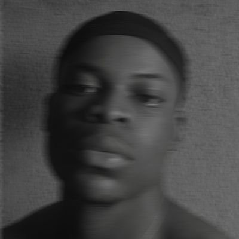

My Resume

Contact Me
My Hobbies
Objective
Computer Science major with a strong foundation in compiler construction, data communications, and database management. Passionate about building efficient and scalable solutions. Proficient in HTML5 and CSS, with an eagerness to expand into full-stack development. Seeking opportunities to apply technical skills in real-world projects and collaborate on innovative solutions.
Education
- B.Sc. Computer Science, UNILAG (In view)
- High School Diploma (2018)
Work Experience
- Product Design Intern, Tedbree (2022)
- Created the Design System and Data Analytics interface for the Bulk SMS platform using Figma.
- Conducted user research, designed wireframes and mockups, and worked with business analysts and designers.
- Gained valuable experience despite the app only reaching the prototyping phase, fueling my passion for UI/UX design.
Skills
- HTML/CSS
- Graphics Design
- Prompt Engineering
- UI Design
Certifications
- JavaScript Essentials 1, CISCO (2024)
- Product Design Bootcamp, Tech1M (2023)
- Responsive Web Design, freeCodeCamp (2022)
- Fullstack Web Development, Zuri (2022)